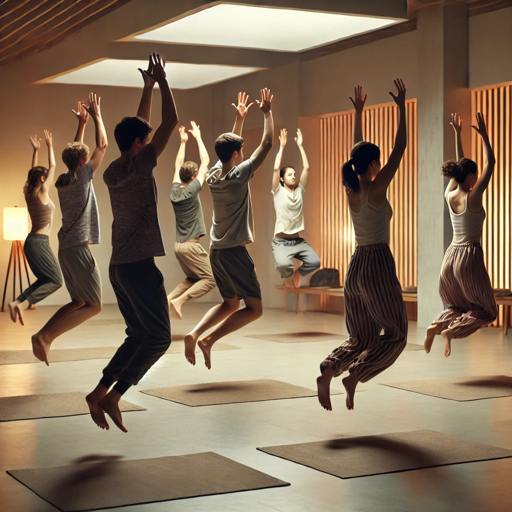

التأمل الديناميكي
التأمل الديناميكي هو ممارسة فريدة طورها أوشو، تجمع بين الحركة الجسدية، والتحكم في التنفس، والتحرر العاطفي. تهدف هذه التقنية إلى مساعدة المشاركين على التخلص من العوائق الذهنية، والتخلص من التوتر، والاتصال بالطاقة الداخلية. تتضمن هذه الممارسة عمليات نشطة وكاثارسية تنتهي بالسكون والوعي.
لممارسة هذا التأمل: قم بتنزيل الصوت واستمع إليه أثناء اتباع الخطوات أدناه.
1. التحضير
ابحث عن مكان هادئ وخاص. ارتدِ ملابس مريحة تسمح بحرية الحركة. تأكد من عدم وجود أي تشتيت خلال مدة الجلسة.

2. الخطوة 1: التنفس الفوضوي (10 دقائق)
قف مع رفع ذراعيك، واغلق عينيك، وتنفس بعمق وسرعة من أنفك. ركز على التنفس الفوضوي، ودع جسمك يملأ بالطاقة.

3. الخطوة 2: الكاثارسيس (10 دقائق)
اسمح لنفسك بالتعبير الكامل عن أي مشاعر لديك. اصرخ، اضحك، ابكِ، أو تحرك. هذه المرحلة تدور حول التحرر الكامل من التوتر العاطفي.

4. الخطوة 3: القفز (10 دقائق)
مع إغلاق عينيك، اقفز لأعلى وأسفل في مكانك بينما تردد المانترا "هو! هو! هو!"، دع الصوت يتردد داخل جسمك عند الهبوط على باطن قدميك.
5. الخطوة 4: التجميد (15 دقيقة)
تجمد فجأة في وضعك أثناء القفز. حافظ على جسمك ساكنًا تمامًا. لاحظ الطاقة التي تتدفق بداخلك بينما تبقى في حالة سكون تام.

6. الخطوة 5: الاحتفال (15 دقيقة)
بعد التجميد، ابدأ بالرقص بحرية وفرح. دع حركاتك تكون تعبيرًا عن طاقتك، واحتفل بالحياة دون أي قيود أو عوائق.